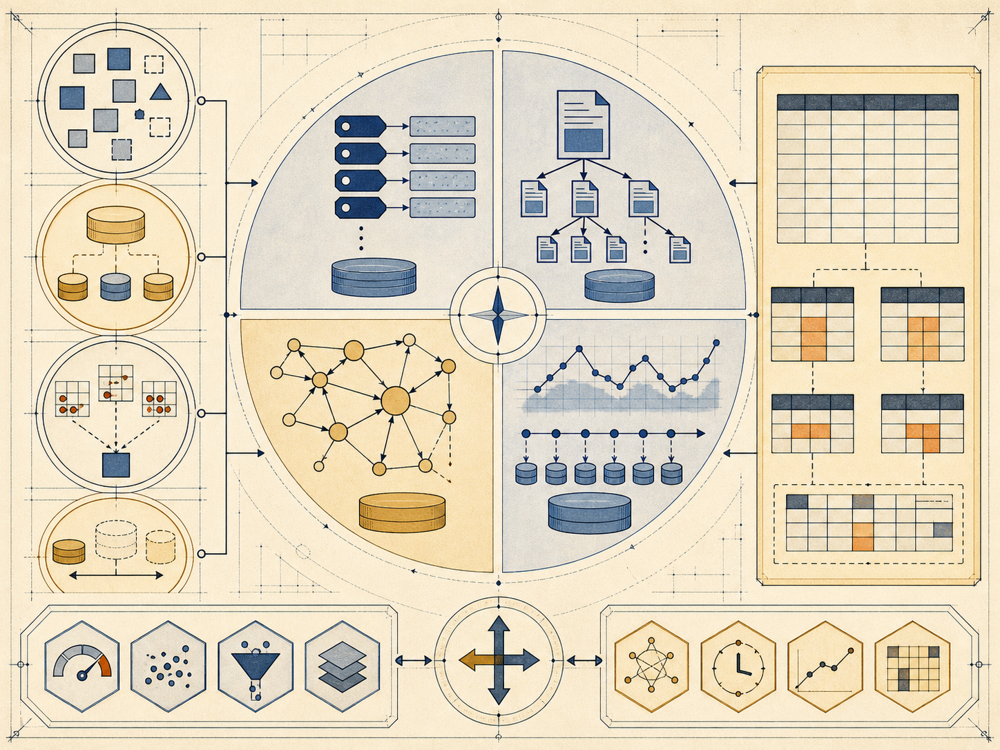

数据量 Volume
规模持续膨胀 → 需要分布式存储与横向扩展
从数据特征与访问模式推导管理模型
 VER. 2608.3
Built with impress.js
VER. 2608.3
Built with impress.js
完成本节后，你应该能够
数据量、类型、速度和价值分别改变存储、建模、响应与服务要求

规模持续膨胀 → 需要分布式存储与横向扩展
结构化、半结构化和非结构化并存 → 需要多种模型与接口
数据到达快且响应时限短 → 需要高吞吐与低延迟处理
价值要通过处理、分析或服务转化 → 需要把数据接入业务流程
不同系统在部署、架构、数据质量和扩展上的典型差异
| 维度 | 典型关系系统倾向 | 典型大数据系统倾向 |
|---|---|---|
| 部署 | 常见单机或有限集群 | 常见多节点集群 |
| 架构 | 部分系统紧耦合 | 部分系统存算分离或松耦合 |
| 数据质量 | 约束更多集中在数据库 | 约束与清洗职责更分散 |
| 扩展 | 纵向扩展或受限横向扩展 | 横向与弹性扩展更常见 |
放宽前置模式或完整性约束后，数据质量责任会更多落在采集、平台与应用治理
数据真实性 veracity 也是常见扩展维度；4V 可作为大数据特征的主要分析框架
先把键的定位职责与值的内容职责分开，再判断具体查询能力
范围扫描不是所有键值系统的共同能力；通常需要有序键值组织或具体系统提供的范围接口
接口简单不等于每一种访问都同样便宜
| 接口 | 课程中的抽象含义 | 典型访问 | 条件或边界 |
|---|---|---|---|
GET(key) | 按键读取一个值 | 点查询 | 需要可定位键 |
SET(key,value) | 插入或更新键值对 | 写入或状态更新 | 写入语义由系统定义 |
SCAN(key,count) | 从起点读取若干键 | 连续读取 | 具体接口可能不同 |
SCAN(key1,key2) | 读取键范围 | 范围访问 | 通常依赖有序组织 |
DELETE(key) | 删除键值对 | 生命周期管理 | 删除和回收语义由系统定义 |
点查、范围查和写入需求决定接口与索引选择
点查、范围查和写入吞吐不能只看一个指标
| 组织结构 | 通常擅长 | 局限或代价 |
|---|---|---|
| 哈希 | 按键点查与更新 | 不擅长按键顺序的范围访问 |
| B／B+ 树 | 点查和范围查 | 更新可能带来外存随机写成本 |
| LSM-tree | 写入较多的工作负载 | 读取可能跨层搜索，后台合并会增加读写放大 |
LSM-tree 以写入路径和后台合并换取吞吐，具体性能仍取决于负载和实现
结构可演进，但解释、校验和迁移责任更多在应用
01
02
03
04[
{"_id":"s1","name":"Wang","major":"IMIS"},
{"_id":"s2","name":"Li","phones":{"main":"..."}}
]两个文档可以有不同字段；缺失字段不自动等于错误
请求先由路由端定位目标分片，再返回单片结果或聚合结果
保存数据子集；实际部署可由副本集承载
保存分片范围和集群元信息
接收请求、转发并聚合结果；本身不保存业务数据
集合像表、文档像记录只是帮助理解的类比，不是严格等价
文档数据库适合结构变化快或嵌套内容多的场景；关键事务与一致性仍需单独评估
选择键值或文档模型要先明确访问方式、写入方式和扩展需求
数据量、类型、速度和价值改变存储、建模、响应与服务要求
GET、SET、SCAN、DELETE 把点查、更新和范围访问直接呈现出来
哈希、有序索引和 LSM-tree 分别回应点查、范围查和写入压力
嵌套灵活性、应用维护和路由分片共同决定系统边界
数据形态 → 访问模式 → 模型与索引 → 集群路由与系统代价